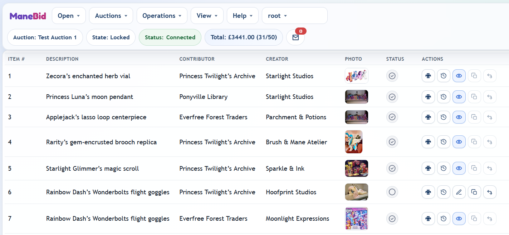
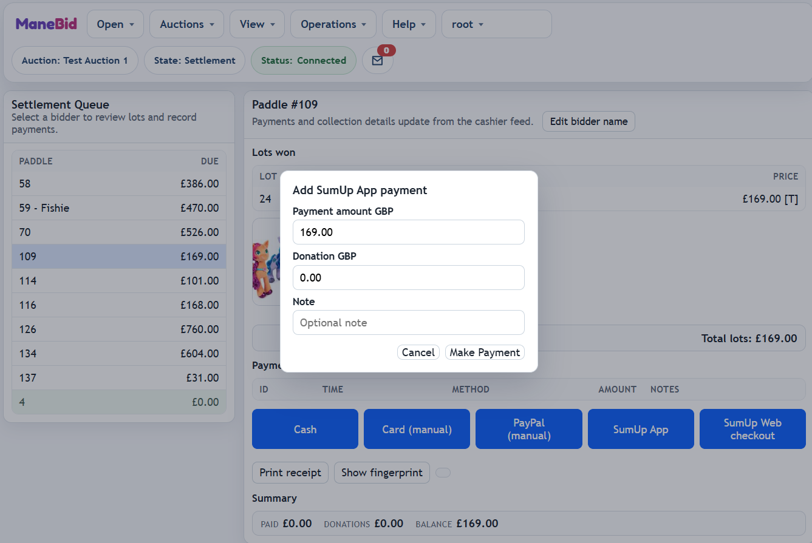
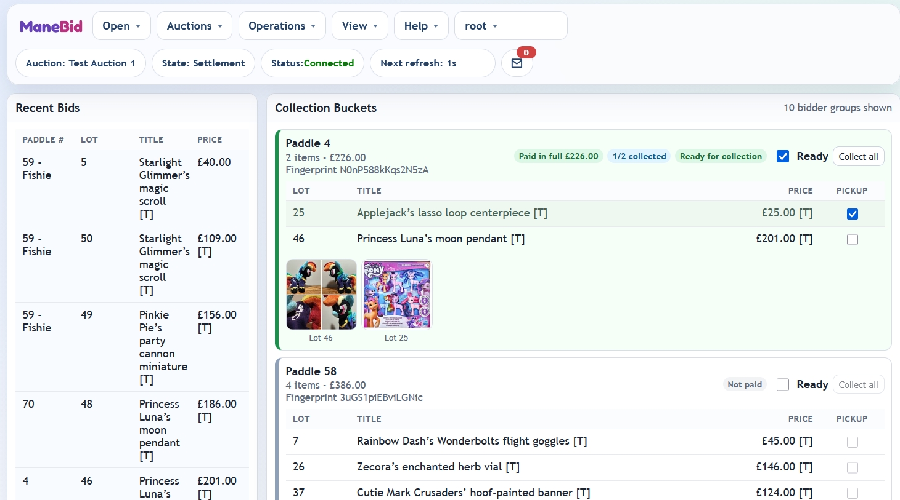
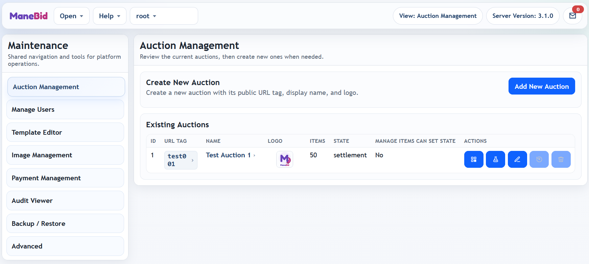
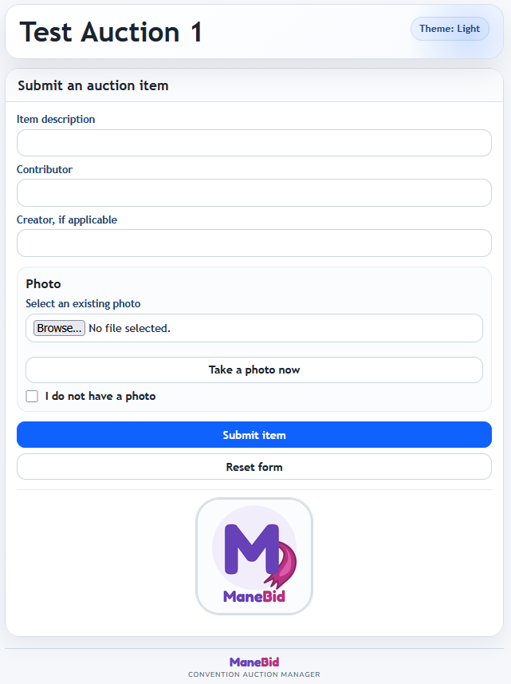

Jump to section
Logging In
Shared Operator Sign-In
Operator pages use a shared login session. Sign in once, then move between the pages your account can access from the Open menu.
- Go directly to an operator page: open
/admin,/cashier,/cashier/live-feed.html,/maint, or/slideshow. If there is no active session, the page redirects to the shared login screen. - Go straight to login: open
/login.html, sign in, and the system opens the first page available to your account. - Use the public screen shortcut: from the public item-entry screen, click the auction picture or logo to open
/admin.
Operator Messaging
Messaging Between Staff
Manage Items, Manage Payments, Manage Collections, and Manage Auctions include a message icon in the top status bar. The icon changes when unread messages are waiting.
- Open messages: click the message icon to open the conversation screen.
- User list: users with access to at least one management page are listed. A green indicator means the user has checked messaging recently; offline users show an approximate last-seen time. An unread count appears beside users with waiting messages.
- All users: select [All users] to send the same message to every available operator. The message is copied into each individual conversation and tagged as sent to everyone; replies appear only in the replying user's conversation.
- Conversation thread: selecting a user shows the message history with timestamps. Showing the thread marks incoming messages from that user as read.
- Attention messages: tick Pop up on recipient screen before sending if the message needs immediate attention. The message is highlighted, and the recipient's message screen opens automatically.
- Acknowledgement: an incoming attention message has an Acknowledge button. Opening a thread marks a message read; acknowledging it separately tells the sender that the attention request was handled.
- Unread alerts: the page title shows the unread count. Operators can opt in to browser notifications for unread messages from the messaging screen; the browser may ask for permission first.
- Read indicator: messages you sent show when the recipient has opened that conversation, and attention messages show when they were acknowledged.
- Item reference: on pages with a selected auction, use Insert item to search the current auction and insert an item reference. On Manage Items, clicking that reference jumps to the item.
Manage Items
Overview
The page provides item entry, item editing, live bidding controls, export and print workflows.

Menu Tree
- Open: Jump to the other operator views from the same shared session.
- Auctions: Choose the current auction and, if maintenance has enabled it for that auction, change the auction state from the custom state picker.
- Operations: Create a new item, manage optional bidder names, refresh the item table, or open the export panel.
- View: Sort by Number, Name, Contributor, Creator, Bidder, or Price, switch between ascending and descending order, and choose whether bidder names are shown beside paddle numbers in the item table.
- Status pills: The sticky header shows the current Auction, State, connection Status, and auction Total.
Item Table And Actions
The main table shows Item #, Description, Contributor, Creator, Photo, a dedicated Status column, and the row Actions. In live, settlement, and archived states the bidder and price columns are also shown.
- Right-click menu: right-click an item row to open the same item actions in a context menu headed by the item number. Actions that are not available for the current auction state, item status, or user permissions are shown disabled.
- Create New Item... opens the add item form.
- Edit opens the editable form in setup and locked states. When editing is blocked the same button position switches to a View icon instead.
- Duplicate inserts a copy of the selected item immediately after the original.
- Move opens the move panel with Move to auction... and Move after... controls. Items with bids cannot be moved.
- Print item slip generates a single-item PDF and asks for print confirmation before updating
last_print. - History opens the item audit trail from the shared audit log.
- Photo tools in the edit and add forms support live capture, rotate left, rotate right, and crop.
- Delete Item is available only while item editing is allowed. Deleting an item hides it, removes its item number, and renumbers the remaining items. It is not permanently removed until purged using the "Manage Auctions" interface.
- Show deleted items: use View > Show deleted items to reveal deleted rows. Deleted rows are shown at the bottom of the table.
- Restore returns a deleted item to the end of the auction with the next available item number. Restore is available only in setup or locked states.
Manage Items Action Icons
Manage Items Status Icons

Manage Bids
The bid controls are shown on the action strip when the auction is in live or settlement and the signed-in user has the Manage Bids permission.
- Record Bid opens a modal for Paddle #, Hammer Price, and optional bidder Name. The left panel lists known paddle numbers and names for the auction; selecting one fills the bidder fields and moves focus to the amount.
- Record and Next saves the bid, keeps the modal open, and advances to the next unfinalised lot. The standard Record Bid button saves the bid and closes the modal.
- Undo Bid first opens a retract preview showing the bidder, payment status, current total owed, amount paid, and the projected balance after retraction.
- Safety rule: a bid cannot be retracted if doing so would push the bidder into a negative balance after payments. In that case a refund must be recorded first.
- Editing lock: once an item has a bid, edit and move actions are blocked even if the auction is still otherwise editable.


Bidder Names
Bidder names are optional convenience information. Paddle number remains the main bidder identifier, and multiple paddle numbers may share the same name.
- During bid entry: enter a name if useful. A non-empty name updates the stored name for that paddle; leaving the field empty does not clear an existing name.
- Manage Bidders: open Operations > Manage Bidders... to edit or clear names for known paddle numbers, or add a new paddle/name pair.
- Show names: use View > Show bidder names to display names beside paddle numbers in the Manage Items table. The option is off by default.
- Show deleted items: use View > Show deleted items. Deleted items remain hidden in other views and reports.
- Archived auctions: bidder names are read-only once the auction is archived.

Export Panel
Export... opens a dedicated panel. The header shows the current auction, the main form switches by export type, and PowerPoint jobs expose inline progress, cancel, and download controls.
- Auction Slides and Item Cards create PPTX files. When a PPTX job is queued or running, the panel shows the current job status and offers Cancel PPTX Export or Download Latest PPTX.
- Item Slips generates the batch slip PDF and opens the print confirmation flow.
- Manual Entry Sheet downloads a PDF sheet for recording bids by hand. It always uses all items.
- Auction Report (PDF) downloads the full auction summary report. It always uses all items.
- Bidder Report (PDF) switches to a bidder-only filter with All, Unpaid, or Uncollected.
- CSV downloads the item CSV export. It always uses all items.
- Selection modes for slides, cards, and slips are All items, Unexported / Out of date items (or Unprinted / Out of date items for slips), and Item number range such as
1,3,4-9. - Reset Tracking is available for slides, cards, and slips only.

Item Slip Printing
Overview
Item slips are text-only labels designed to allow quick tagging of donated items. Layout is controlled by slipConfig.json in Manage Auctions > Template Editor and supports both 80mm receipt printers and 6x4 label printers.
- Single item: use the print button in the row actions.
- Batch: open Manage Items > Operations > Export..., choose Item Slips, then use All items, Unprinted / Out of date items, or an Item number range.
- Tracking: the app tracks print status and is updated after the operator confirms the browser print step succeeded.
- Reset tracking: use Reset Tracking while Item Slips is selected in the export panel.
-
Print button colours: default blue means there is no confirmed print yet, green means the slip is up to date, and amber means the item text changed after the last confirmed print.
Printer Setup (Recommended)
80mm Receipt Printer (for example MUNBYN ITPP047)
- Paper size: match the driver and slip config. Typical receipt setup is 80mm width with your configured page length.
- Orientation: use the same orientation as
slipConfig.json(portraitorlandscape). - Scale: 100% (or actual size). Avoid fit-to-page modes that change text placement.
- Margins: none or the minimum available.
- Duplex: off.
- Cutter: enable auto-cut if supported and set one cut per page.
- Paper feed: calibrate top-of-form to avoid vertical drift between slips.

6x4 Label Printer
- Media size: 4in x 6in (101.6 x 152.4mm) in both the printer driver and slip config.
- Orientation: match the slip config orientation.
- Scale: 100% (actual size).
- Margins / offset: use zero or minimal margins and calibrate the label origin if content is shifted.
- Cut / tear: if a cutter is fitted, set one cut per page. Otherwise use tear-after-each-label mode.
Manage Payments
Overview
Manage Payments allows you to manage and process payments for items won in auctions.
The page header shows the selected auction, the current state, and the connection status. The main workspace is split between the settlement queue and the selected bidder's detail panel.

Menu Tree
Settlement Queue
- Settlement Queue: the left panel lists bidders with one or more won items and the amount currently due. Stored names appear beside paddle numbers when present.
- Bidder detail: selecting a row opens Lots won, Payments, and Summary in the main panel. Use Edit bidder name to add, edit, or clear the optional name before the auction is archived.
- Picture toggle: the Show pictures option controls the item preview strip in the bidder detail and the linked buyer display.
- Buyer Display: opens a pop-out screen for the currently selected paddle, including totals and optional thumbnails.

Payments, Donations, And Receipts
- Payment methods: Cash, Card (manual), PayPal (manual), SumUp (card reader), SumUp (web), if enabled by configuration.
- Payment screen: each payment captures a payment amount, an optional donation amount, and an optional note.
- Donation rule: a donation can only be added when the full outstanding balance is being paid.
- Settlement state: payment buttons are disabled unless the auction is in settlement.
- Refunds: recorded payments can be reversed from the payments table. A reason is required.
- Receipt printing: Print receipt generates a narrow settlement receipt showing paddle number, optional bidder name, lots won, payments, total donations, amount due, operator name, and the bidder fingerprint when available.
- Fingerprint display: Show fingerprint reveals the current bidder fingerprint. This allows staff to verify the identity of the bidder at collection.
- Operations menu: Payment Summary shows a payment-method breakdown, including donation totals, and Download CSV Summary exports the settlement summary for the selected auction.


Manage Collections
Overview
Manage Collections combines a recent-bids view with bidder collection buckets so staff can mark buckets ready, track invalidations, and mark collection as items leave the desk.
The header shows the selected auction, current state, connection status, and a live refresh countdown.

Menu Tree
Panels And View Controls
- Recent Bids: the left column keeps a rolling list of recently finalised lots.
- Unsold Lots: can be shown or hidden with the Unsold items checkbox.
- Collection Buckets: the main panel groups sold items by bidder. Stored names appear beside paddle numbers when present.
- Filter paddle #: narrows the display to a single bucket.
- Show changes for... (s): controls how long new-item and bid-retraction highlights stay visible.
- Bucket sort: choose Last update, Last paid, Ready state, or Paddle number.
- Pictures and 2+ items only are saved as page preferences for the signed-in user.
Bucket States And Collection Rules
- Badges: each bucket can show payment status, collected count, recent activity, new item, bid retracted, ready for collection, or ready invalidated.
- Ready checkbox: marks the bucket ready and stores the current bidder fingerprint.
- Fingerprint invalidation: if the bidder's sold items change after the bucket was marked ready, the bucket is flagged as Ready invalidated and an alert is shown.
- Pickup column: each item row has a pickup checkbox. It is disabled until the auction is in settlement and the bidder has a non-zero recorded payment.
- Collect all: marks all sold items in the bucket as collected and refreshes the bidder fingerprint.
- Export uncollected list: downloads a CSV showing the uncollected lots, paddle numbers, optional bidder names, prices, payments total, and payment status for the selected auction.
Slideshow
Overview
The slideshow is the unattended presentation mode for item images and overlays, using the shared operator session. A user with Slideshow access signs in through the shared login and can then launch slideshow kiosk mode.

Getting Started

- On first load, the page opens an auction selector overlay for the shared slideshow session.
- Starting the slideshow from a shared operator session creates a kiosk session and signs this browser out of the other operator pages for safety.
- If the browser returns to slideshow in kiosk mode, the last selected auction is reused automatically until Change auction is chosen.
Controls And Shortcuts
- [c] toggles the configuration panel.
- [space] pauses or resumes playback.
- [Esc] pauses playback.
- Touch-and-hold or click-and-hold shows the configuration panel on touch-first devices.
Configuration Panel
The overlay auto-hides after inactivity and includes a Change auction action for returning to the auction selector.

- Transition Time: how long each slide is shown.
- Show Description, Show Contributor, and Show Creator: control overlay text.
- Refresh Interval: how often the slideshow refreshes its item list.
- Shuffle Items: randomises the display order.
- Change auction: returns to the auction selector overlay.
- Pause, Resume, and Reload slideshow: control playback directly.
Manage Auctions
Overview
Manage Auctions uses the same shared top menu as the other operator pages, then switches between operational areas from a dedicated left-hand navigation rail.
The status strip shows the current maintenance view and the version summary for the installation.

Menu Tree
- Help > About: opens the current build and environment details for the maintenance console.
- User menu: access theme selection, password change, and logout from the signed-in user menu.


Auction Management
- Auction Management lists existing auctions with ID, URL tag, name, logo, item count, read-only status, and the Admin Can Set State flag.
- Generate QR Code opens a modal for a static public auction URL PNG. The root URL is editable, the
?auction=URL-tagsection is fixed, and options include foreground/background hex colours, output size, and an optional centre image from Image Management. - Edit Auction opens a modal for the auction name, URL tag, logo, auction status, and the Allow admins to change the auction state checkbox.
- Right-click menu: right-click an auction row to open a context menu headed by the auction name. It includes Generate QR code, Edit auction, Set status, Manage Items can set state, Reset auction, Purge deleted items, and Delete auction.
- Context menu status: Set status opens a submenu with the current auction status ticked. Manage Items can set state is ticked when Manage Items users are allowed to change state, and selecting it toggles that setting.
- Unavailable actions: context menu actions are greyed out using the same rules as the action buttons, including reset only for setup or archived auctions, purge only when deleted items exist, and delete only when the auction has no items.
- Reset Auction and Delete Auction. Reset removes all auction items, bidders, and payments. Delete removes the auction entirely.
- Purge Deleted Items permanently removes deleted items and their photo files from the selected auction after maintenance password confirmation.
- Add New Auction has dedicated fields for the display name, URL tag, and logo.


Database Backups
- Create Backup opens a modal with an optional note field, live operation status, and a captured backup log.
- Server Backup Manager lists the managed backups on the server, total occupied size, and a row of action icons for each backup.
- Backup Details opens a wide modal showing metadata, component summary, and the auctions contained in that backup.
- Restore Backup opens a restore modal with separate checkboxes for Database, Photos, and Resources + Configs.
- Restore Log is stored after a restore completes and can be saved to disk.
- Legacy Local DB Restore supports standalone
.dbbackup files, with Download Current Database File alongside it.
Manage Auctions Backup Action Icons

CSV Import / Export And Reports
- CSV Import / Export is a dedicated tab focused on the auction data bundle.
- Export CSV downloads the current bulk export archive.
- Import CSV uploads a file with the columns
description,artist,contributor,notes, andauction_id.

Diagnostics
- Photo Storage reports current image usage and can clean up orphaned images.
- Run Detailed Integrity Check produces a detailed report across workflow, schema, and data-consistency checks.
- Apply Safe Fixes becomes available when the integrity report includes fixable problems.
- Restart Server is a maintenance-only command for the backend service.

Manage Users
- User table: each row shows read-only ticks for Manage Items, Manage Payments, Manage Auctions, Slideshow, Manage Collections, Manage Bids, and Manage Users.
- Permission dependencies: Manage Bids requires Manage Items, and Manage Users requires Manage Auctions.
- Add User creates the initial password and assigns one or more roles or permissions in a single form.
- Edit User opens the selected user. Allows password and permissions to be edited.
- Remote logout: maintenance can force another user out of all current sessions. That user is redirected to the shared login page with a remote logout message.
Manage Auctions User Action Icons


Messaging
- Status: shows whether messaging is enabled, how many messages are held, and the estimated cache size.
- Limits: shows the configured message count, cache size, and character limits.
- Persistence: shows whether the message cache has been loaded from disk and whether a save is pending. The persistence file location is set in backend
config.json. - Item references: Manage Auctions has no selected auction context, so the messaging item-search control is not shown on this page.
- Export Messages CSV: downloads the current message cache for record keeping, including attention read and acknowledgement fields.
- Clear Message Cache: removes all stored messages.
Templates, Images, Payments, Audit, And Logs
- Test Data Generator: create test items, create test bids, or clear generated bids for rehearsals.
- Template Editor: load, validate, save, or reset
pptx,card, andslipgenerator configs. - Image Management: upload shared resource images and remove unneeded files.
- Payment Management: review enabled payment methods and test callback URLs.
- Audit Viewer: filter by ID or event type, then download the filtered audit CSV.
- Server Logs: refresh logs inline, enable auto-refresh, or use the dedicated pop-out log viewer.
See the PowerPoint Template Guide for the slide and card template details and the underlying generator config files.


Public Entry
Overview
The public item-entry page is used by donors or staff to submit items without an operator login, and it accepts a short-name URL parameter such as ?auction=test001.
- If the auction is not supplied in the URL, the page asks for the short name first.
- Item description and Contributor are required. Creator, if applicable is optional.
- The page is restyled into a panel layout with a dedicated photo section.
- Users can upload an existing photo, capture a live photo, or tick I do not have a photo.
- The public page includes its own theme toggle and is intended for setup state submissions.


Function / State Quick Reference
| Function | Access | Setup | Locked | Live | Settlement | Archived |
|---|---|---|---|---|---|---|
| Submit item (public) | Public | Yes | No | No | No | No |
| Create new item | Manage Items | Yes | Yes | No | No | No |
| Edit item | Manage Items | Yes | Yes | No | No | No |
| Duplicate item | Manage Items | Yes | Yes | No | No | No |
| Move item (within auction) | Manage Items | Yes | Yes | No | No | No |
| Move item (to another auction) | Manage Items | Target auction must be setup or locked | Target auction must be setup or locked | No | No | No |
| Print item slip | Manage Items | Yes | Yes | Yes | Yes | Yes |
| Record bid | Manage Items + Manage Bids | No | No | Yes | Yes | No |
| Undo bid | Manage Items + Manage Bids | No | No | Yes | Allowed only if retraction will not create a negative balance | No |
| View payment queue | Manage Payments | Yes | Yes | Yes | Yes | Yes |
| Take payments | Manage Payments | No | No | No | Yes | No |
| Reverse payments | Manage Payments | No | No | No | Yes | No |
| View collection buckets | Manage Collections | Yes | Yes | Yes | Yes | Yes |
| Mark item collected / Collect all | Manage Collections | No | No | No | Requires settlement state and a recorded payment for that bidder | No |
| Run slideshow | Slideshow | Yes | Yes | Yes | Yes | Yes |
| Generate test items | Manage Auctions | Yes | Yes | No | No | No |
| Generate test bids | Manage Auctions | No | No | Yes | No | No |
| Reset auction | Manage Auctions | Yes | No | No | No | Yes |
| Delete auction | Manage Auctions | Only when the auction is empty | No | No | No | Only when the auction is empty |